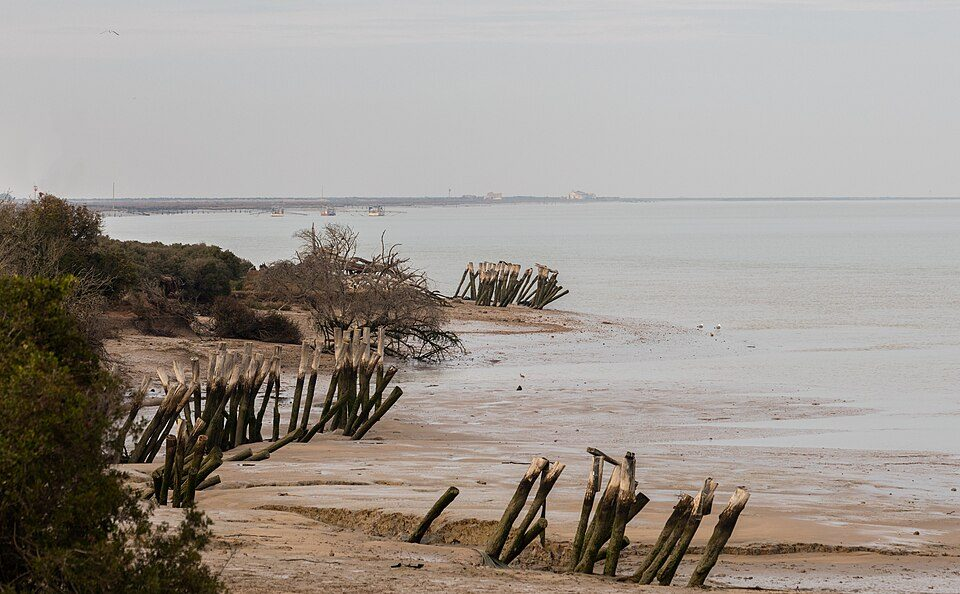
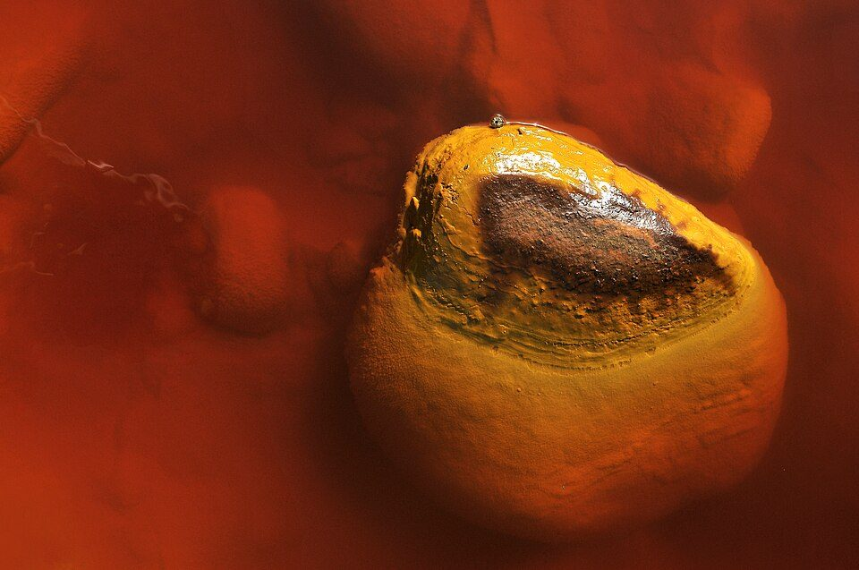

The geography of Spain
A country of mountains, plateaus, volcanoes and two seas: the relief, rivers, climates and most astonishing landscapes of Spain.


Spain covers about 506,000 km², most of the Iberian Peninsula plus the Balearic and Canary archipelagos and the cities of Ceuta and Melilla. It is the fourth-largest country in Europe and one of the most varied: in a few hours you can travel from Atlantic forests to deserts, from snowy peaks to volcanoes.
A high peninsula
The star feature is the Meseta Central, a raised plateau 600 to 1,000 metres high that covers almost half the peninsula. Madrid is the highest capital in the European Union, at about 650 metres. The Meseta is split in two by the Sistema Central and ringed by mountain ranges: the Cantabrian Mountains, the Iberian System and the Sierra Morena. Beyond it rise the Pyrenees and the Betic ranges, home to the Sierra Nevada.
The rivers
| River | Length | Flows into |
|---|---|---|
| Tagus (Tajo) | 1,007 km (the longest in the peninsula) | Atlantic, at Lisbon |
| Ebro | 930 km (the largest flow in Spain) | Mediterranean, in a great delta |
| Douro (Duero) | 897 km | Atlantic, at Porto |
| Guadiana | 744 km | Atlantic |
| Guadalquivir | 657 km (the only one navigable up to Seville) | Atlantic, at Doñana |
Most of the big rivers flow into the Atlantic, because the Meseta tilts westwards. The Ebro Delta, one of the Mediterranean's largest wetlands, is shrinking because dams trap the sediment that built it.
The climates
Spain has a huge variety of climates:
- Oceanic in the north: mild and rainy, "Green Spain".
- Mediterranean across most of the country: dry, hot summers.
- Continental on the Meseta: cold winters and very hot summers.
- Mountain in the ranges.
- Subtropical in the Canaries, mild all year round.
- Semi-arid in the south-east: Cabo de Gata is one of the driest places in Europe.
The national parks
Spain has 16 national parks. Some of the best known:
- Picos de Europa, the first (1918).
- Ordesa y Monte Perdido, in the Huesca Pyrenees, with canyons more than 1,000 metres deep.
- Doñana, one of Europe's most important wetlands, a stopover for millions of migrating birds and a refuge for the Iberian lynx.
- Teide, Spain's most visited national park and one of the most visited in the world.
- Sierra de las Nieves (Málaga), the newest (2021), famous for its Spanish firs.


Landscapes from another planet
- The Río Tinto (Huelva), with red, acidic, iron-laden water, mined for 5,000 years.
- The Ciudad Encantada ("Enchanted City") in Cuenca, with limestone rocks sculpted by water and wind.
- Las Médulas (León), the remains of a gigantic Roman gold mine, a World Heritage Site.
- El Torcal de Antequera (Málaga), a maze of rocks that was seabed 150 million years ago.
- The volcanic landscapes of Timanfaya and Teide in the Canary Islands.


Videos to understand it better
- Why 70% of Spain is EmptyRealLifeLore · 12M views
Videos are from YouTube and belong to their creators. They only load when you click them. See all videos →